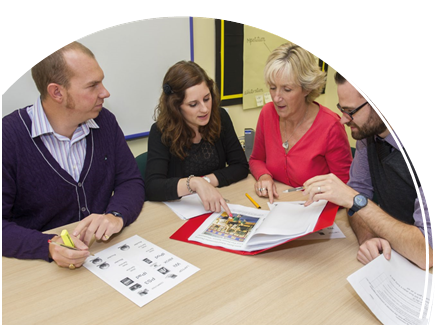

Planning
How can we turn the requirements of the programme of study into engaging lessons?
Here are four things to keep in mind.
- The programme of study is a minimum entitlement – there’s nothing that imposes any limits on what schools, teachers or pupils can cover in Computing.
- The programme of study is not a scheme of work – it’s up to you, as a school, to determine how you cover this content, in what order, in what contexts and with what resources.
- Schemes of work are not lesson plans – that level of planning comes later, with the ideas for each unit of work getting translated into the detail of specific objectives, resources, activities and assessment.
- There is a far greater focus now on learning about computers and computation, not simply learning how to use technology.
The opportunity to do something really creative is there for the taking. A number of strategic decisions need to be made before work can properly begin on developing a scheme of work for Computing, and it would be wise to consult with stakeholders and potential partners before committing to any one path. You’ll need to consider the following areas.
Discrete or embedded? There were strong arguments for adopting an ‘embedded’ approach to the old ICT programme of study, in which ICT capability was covered in meaningful contexts derived from other subject areas.
This looks to be a lot harder for Computing because of the discrete subject knowledge expectations, but it’s certainly not impossible. In fact, there are wide applications of computational thinking (such as looking at algorithms and decomposing problems into smaller steps) across the curriculum, and there’s plenty of scope for using other subject areas to provide interesting objectives for pupils’ programming projects.
National curriculum or National Curriculum ‘plus’? Remember that the National Curriculum is the minimum. Will you choose to include additional content? If so, what other things might be added to the list?

There are arguments that the Key Stage 2 curriculum should also include an explicit requirement for creative work with html. Note that these things are not prohibited, and you might like to include these, or other, elements when developing your own scheme of work.
Themes? As you read through the programme of study, what overarching themes suggest themselves to you? Do these provide a structure that ensures both progression and continuity as pupils move through primary school? Might these be one way of fitting different parts of the Computing curriculum together?
Grid? How detailed should the scheme of work be? Many schools adopt a half-termly grid, but a more flexible structure might suit your school better. Similarly, consider whether the scheme of work needs to specify the order in which each year’s units are studied. Is the order important for progression? Should individual class teachers be able to decide?
Format? In practical terms, what should the final document look like? A single table, tables for each year/half term, or simply text laid out in paragraphs? Will you need to print a copy or can it be entirely online, perhaps as a collaborative document (e.g. in Google Drive, a wiki or on GitHub11) for you and your colleagues to revisit and revise in the light of the experience gained from teaching it.
Also think about how much detail needs to be specified – as a rule of thumb, include enough for a teacher lacking in confidence to feel that they can do a good job, but not so much that the most confident feel limited by what’s there. Depending on the decisions above, it would be reasonable to expect a scheme of work to include:
- topic title
- curriculum coverage
- learning objectives
- outline of activities
- resources
- cross-curricular links
- assessment opportunities.
There are several ways to go about implementing a scheme of work for Computing.
- Top down, starting from the programme of study itself.
- Bottom up, starting with ideas for projects and units of work, which include cross-curricular and embedded approaches.
- Off the shelf, using a commercial, free or crowd-sourced scheme, perhaps with some modifications.
- A more pupil-centred, enquiry-led approach, although a scheme of work in this context might merely suggest possible projects, resources and a consistent approach to monitoring achievement and curriculum coverage.